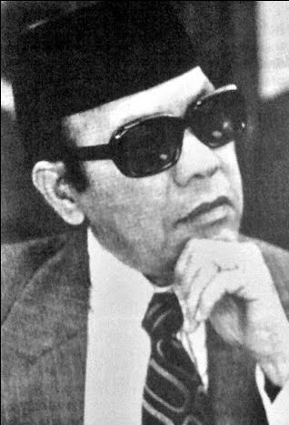
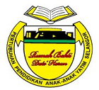

Y.Bhg Allahyarham Dato’ Seri Haji Harun Idris
21 July 1924 - 19 October 2003

The original logo of Rumah Bakti, formerly known as
Rumah Bakti Hulu Kelang.
History of Rumah Bakti
Out of a sense of responsibility and sympathy for the orphans, a group of community activists and senior officials of the Selangor State Government have successfully established and registered the "Selangor Orphan Education Organization" according to Registration Number ARS/Sel/50/66 on 16 August 1966.
With the approval of this registration, the Committee has moved vigorously to achieve the goal of its establishment. For the services of Y.Bhg Allahyarham Dato' Haji Harun Idris and his wife Y.Bhg Datin Salmah Suleiman, the Selangor State Government has granted a plot of land in Mukim Hulu Kelang (HS.231) with an area of 4.8 acres according to the approval document number PHT.G.2/139 /75. To determine that this project can be implemented successfully Y.Bhg Allahyarham Dato' Haji Harun Idris has been appointed as the Chairman of this Organization.

The Founder of Rumah Bakti Dato' Harun
As a result of their hard work, several programs have been carried out such as the Dinner Ceremony, the Premiere and an appeal to the members, the organization has successfully built a House of Worship at a cost of RM158,107.81.
DYMM Almarhum Sultan Salahuddin Abdul Aziz Shah Alhaj ibni Almarhum Sultan Hisamuddin Alam Shah
Sultan of Selangor has agreed to become the Patron of RBHK. At the initial stage, the recruitment of orphans was started in 1976, a total of 26 people consisting of 13 boys and 13 girls aged between 6 and 12 years. RBHK was inaugurated by His Majesty the Sultan of Selangor on 5 March 1977. From year to year the number of orphans has increased and until now in 2017, Rumah Bakti has been inhabited by a total of 66 orphans aged from 7 to 17 years.
On March 2, 1982, two new 2-story dormitory blocks were completed. The two dormitory blocks are worth RM600,000.00 and were donated by the Selangor State Government and public donations. A surau was also built in 1984. In 2009 a new surau was built to replace the old one. This new surau was donated by Y.Bhg Datin Salmah Sulaiman, wife of the late Dato' Haji Harun Idris. RBHK got a new library in 1989. This library became a Resource Center in 1997. Because RBHK got a new surau, the old surau that was built in 1984 was renovated into a new Resource Center. The Resource Center is divided into two parts, the library and the computer room.
In memory of the late Y.Bhg Dato' Haji Harun Idris, the members of the Selangor Orphan Education Organization have agreed to change the name of Rumah Bakti Hulu Kelang (RBHK) to Rumah Bakti Dato' Harun (RBDH) along with the change of the symbol of Rumah Bakti amended and approved by the Registrar of Societies on 29 July 2011.

The New Logo of
Rumah Bakti Dato Harun
THE MEANING OF LOGO
Yellow - protect orphans to be faithful, grateful and responsible |
Red - brave and visionary |
Green - children grow up with guidance and excellent academic performance |
Black - disciplined |
White - sincerity and cleanliness |
|
READING SIDE
ما نَقَصَتْ صَدَقَةٌ مِن مالٍ، وما زادَ اللَّهُ عَبْدًا بعَفْوٍ، إلَّا عِزًّا
The meaning: “There will be no decrease in property with charity. And a servant who forgives will surely increase glory for him.”
والصدقة تطفىء الخطيئة كما تطفىء الماء النار
“Charity can erase sins like water extinguishes fire.”
Hadith Narrated by At-Tirmidhi, 614
"The best home among Muslims is a home where there are orphans who are treated well. And the worst house among the Muslims is the house where there is an orphan and he is treated badly." (Hadith Narrated by Ibnu Majah)
DONATE NOW
|